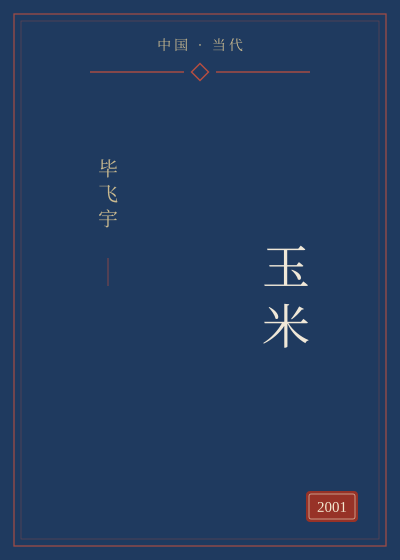
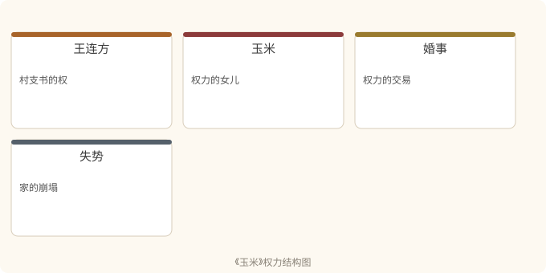

玉米
一、基本信息
| 作者 | 毕飞宇 |
|---|---|
| 成书/出版 | 出版年份待核（中国作家网 C022 载《玉米》获英仕曼亚洲文学奖（2010）；2001/2002年发表说待核） 汪政：毕飞宇的目光（中国作家网）（官方文学机构） |
| 国别/地区 | 中国 |
| 时代 | 现当代 · 当代 |
| 体裁 | 中篇小说 |
| 语言 | 汉语（白话） |

《玉米》权力结构图（主题·结构图）
二、创作背景
中国作家网（C022）：作品列表'长篇《上海往事》《平原》《推拿》《玉米》，另有玉米系列及中篇《青衣》'；《玉米》获英仕曼亚洲文学奖（2010）（C022 搜索口径——原文待核）。
'玉米系列'：《玉米》《玉秀》《玉秧》三连中篇（C022：'另有玉米系列'）。
三、内容脉络
王玉米在王家庄的权力家庭教育：父亲的失势与婚事的挫败（通说待核）。
三姐妹：玉米、玉秀、玉秧的不同命运（通说待核）。
四、主要人物表
| 人物 | 身份 | 说明 |
|---|---|---|
| 玉米 | 长女 | 权力的女儿（通说待核） |
| 王连方 | 村支书父亲 | 失势的权力（通说待核） |
五、主题与艺术特点
- 权力如何进入家庭与身体（通说）。
- '玉米系列'的女性谱系（C022）。
- 乡土中国的微观政治（通说）。
六、影响与评论
- 中国作家网：毕飞宇获鲁迅文学奖、法兰西文学艺术骑士勋章（C022 作者级）。
汪政：毕飞宇的目光（中国作家网）（官方文学机构） - 中国作家网：《玉米》获英仕曼亚洲文学奖（2010）（C022 口径）。
汪政：毕飞宇的目光（中国作家网）（官方文学机构）
七、阅读建议
难点
- 权力语言的日常性。
- 三部的接力结构。
- 《玉米》（江苏文艺出版社，通说待核）。
先《玉米》→《玉秀》→《玉秧》。
八、待核实
- 首刊（《人民文学》2001年说）核对。
- 王玉米/王连方人名核对。
- 英仕曼亚洲文学奖（Man Asian，2010）核对。
本页主要来源
毕飞宇的其他收录作品：推拿